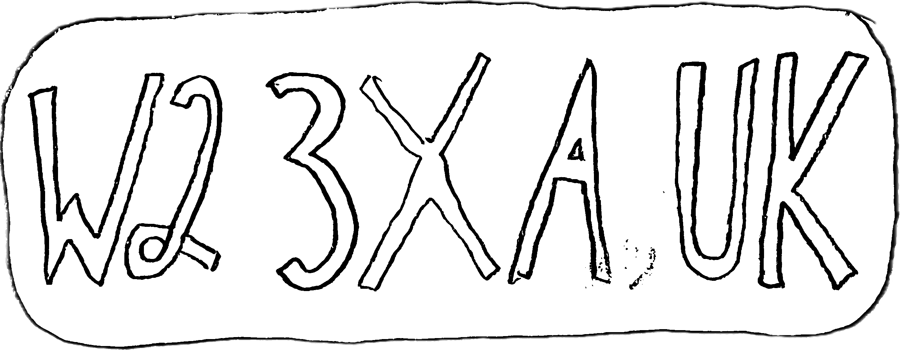

The wind organ reads written words and plays what it finds in them. Press play and the text lights up as the organ reaches each word.
how the organ reads
- vowelsThe organ sings them. u, o, a, e, i climb from low to high, all inside G major.
- hard lettersb c d g k p q t x strike the glockenspiel, each with its own bright note.
- soft letterss f h l m n r v w z and the rest make no sound. They only take time, like breath.
- capitalsA capitalised word is firmer. A word in capitals is loud.
- punctuationCommas are breaths, full stops are rests, line ends are rests, and a blank line is a long one.